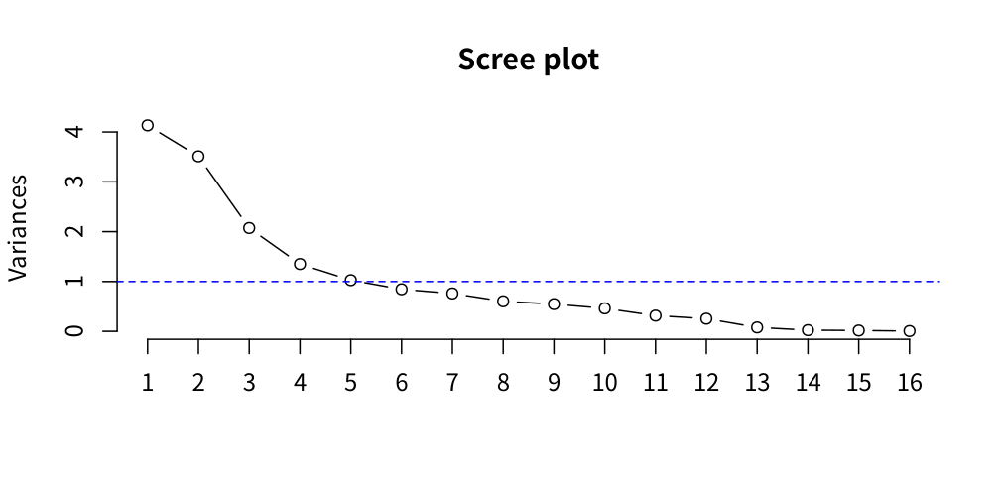
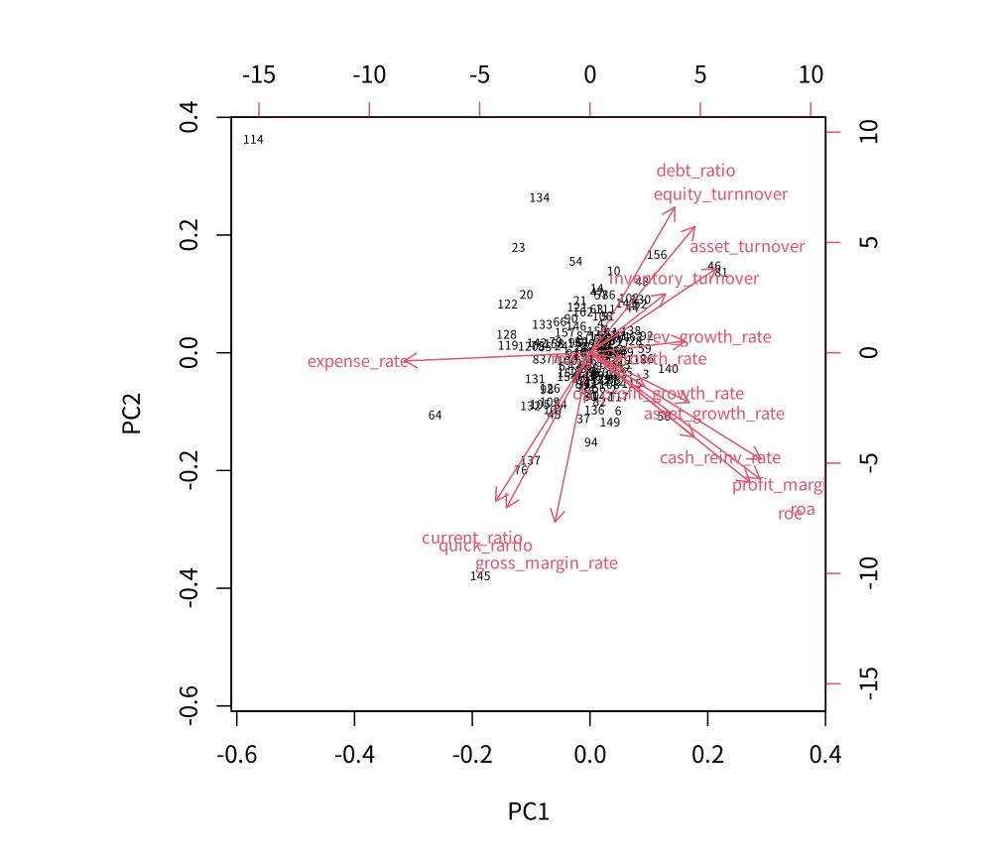

作業 4 財務指標的主成分分析
作業 4 用一百六十多間公司的 16 個財務指標，以主成分分析 PCA（並用 SPCA 輔助確認）把很多個指標濃縮成少數幾個有意義的主成分，再依第一主成分說明什麼樣的公司適合投資。用到的課堂內容：
- 讀檔與檢查：
read_csv()、summary()、cor()（第 1 章 1.8、第 5 章 5.1） - PCA：
prcomp()、summary()、screeplot()、$rotation、biplot()（第 11 章 11.2） - SPCA：
nscumcomp()（第 11 章 11.3）
每一題的結構：題目 → 程式與輸出 → 列點說明在做什麼 → 「可直接貼到作業」的段落文字（按「複製這段」就能貼進 Word）。程式碼和文字中的函數名稱都有虛線底線，點下去會跳到課堂講解那個函數的地方。
資料檔：financialdata.csv。
library(tidyverse)
library(nsprcomp)
1.1讀入資料與事前檢查
對應課程內容（6 處）
- 第 1 章 1.8・讀 CSV：read.csv()（read_csv、read.csv）
- 第 1 章 1.6・拿到資料先檢查（dim、head、ncol）
- 第 1 章 1.2・常用的摘要函數（summary、sum）
- 第 1 章 1.9・資料框的缺失值（is.na）
- 第 1 章 1.1・函數與說明文件（round）
- 第 5 章 5.1・EDA 是什麼、為什麼要做（cor）
資料 financialdata.csv 有 163 間公司的財務指標：comp_id（公司代號）、roe（股東權益報酬率）、roa（資產報酬率）、profit_margin_rate（營業利益率）、gross_margin_rate（營業毛利率）、expense_rate（營業費用率）、asset_turnover（資產週轉率）、inventory_turnover（存貨週轉率）、equity_turnnover（淨值週轉率）、rev_growth_rate（營收成長率）、margin_growth_rate（毛利成長率）、op_profit_growth_rate（營業利益成長率）、cash_reinv_rate（現金再投資比率）、asset_growth_rate（資產成長率）、current_ratio（流動比率）、quick_rartio（速動比率）、debt_ratio（負債比率）。
## [1] 162 17head(fin)
## # A tibble: 6 × 17
## comp_id roe roa profit_margin_rate gross_margin_rate expense_rate
## <dbl> <dbl> <dbl> <dbl> <dbl> <dbl>
## 1 2303 3.06 2.21 4.4 18.1 14.8
## 2 2330 23.6 17.8 39.4 50.6 11.0
## 3 2337 25.7 14.3 16.8 37.0 20.1
## 4 2342 -3.41 -0.72 3.86 16.9 13
## 5 2344 10.9 7.69 14.0 34.3 20.3
## 6 2408 37.0 28.3 34.2 44.9 10.7
## # ℹ 11 more variables: asset_turnover <dbl>, inventory_turnover <dbl>,
## # equity_turnnover <dbl>, rev_growth_rate <dbl>,
## # margin_growth_rate <dbl>, op_profit_growth_rate <dbl>,
## # cash_reinv_rate <dbl>, asset_growth_rate <dbl>,
## # current_ratio <dbl>, quick_rartio <dbl>, debt_ratio <dbl># comp_id 只是公司代號，不是財務指標，先拿掉
fin_x <- fin[, -1]
ncol(fin_x)
## [1] 16summary(fin_x[, c("roe", "current_ratio", "op_profit_growth_rate")])
## roe current_ratio op_profit_growth_rate
## Min. :-245.20 Min. : 50 Min. :-449.3
## 1st Qu.: -0.28 1st Qu.: 187 1st Qu.: -15.5
## Median : 7.98 Median : 297 Median : 15.8
## Mean : 4.36 Mean : 394 Mean : 36.7
## 3rd Qu.: 16.54 3rd Qu.: 454 3rd Qu.: 67.6
## Max. : 37.01 Max. :3783 Max. :1708.7## [1] 0# 看看幾個指標之間的相關
round(cor(fin_x[, c("roe", "roa", "profit_margin_rate", "current_ratio", "quick_rartio", "debt_ratio")]), 2)
## roe roa profit_margin_rate current_ratio
## roe 1.00 0.93 0.77 0.00
## roa 0.93 1.00 0.85 -0.01
## profit_margin_rate 0.77 0.85 1.00 -0.08
## current_ratio 0.00 -0.01 -0.08 1.00
## quick_rartio 0.05 0.05 -0.02 0.98
## debt_ratio -0.13 -0.05 0.03 -0.59
## quick_rartio debt_ratio
## roe 0.05 -0.13
## roa 0.05 -0.05
## profit_margin_rate -0.02 0.03
## current_ratio 0.98 -0.59
## quick_rartio 1.00 -0.52
## debt_ratio -0.52 1.00說明：
- 題目寫 163 間公司，但檔案實際是 162 列（
dim()的結果），以實際資料為準。 - 用
read_csv()讀檔。資料裡有些數字有千分位逗號（例如 "1,708.73"），read_csv()會自動把它們讀成數字；如果用read.csv()，這幾欄會變成文字，要另外處理。 comp_id是公司代號，數字大小沒有意義，所以用fin[, -1]拿掉第 1 欄，剩下 16 個財務指標。- 沒有缺失值（
sum(is.na())是 0）。 - 單位差很多：流動比率大多在一兩百（%），最大到 3,783.42；營業利益成長率從 -449.33 到 1,708.73；ROE 大多在正負幾十之間。所以做 PCA 時一定要標準化（
scale = TRUE）。 - 有些指標高度相關：ROE、ROA、營業利益率彼此相關（都在衡量獲利），流動比率和速動比率的相關接近 0.98——資訊重複，適合用 PCA 濃縮。
題目說明有 163 間公司，實際讀入後共有 162 間公司、17 個欄位，我以 read_csv() 讀入，部分數值含有千分位逗號，read_csv() 會自動轉為數值。其中 comp_id 是公司代號而非財務指標，因此先將其刪除，保留 16 個財務指標進行分析，資料中沒有缺失值。檢查後發現各指標的單位與範圍差異很大，例如流動比率最大可達 3,783.42，營業利益成長率介於 -449.33 與 1,708.73 之間，而 ROE 多在正負數十之間，因此進行主成分分析前必須先標準化，避免數值範圍大的指標主導結果。另外，ROE、ROA 與營業利益率彼此高度相關，流動比率與速動比率的相關係數更達 0.98，表示指標之間有不少重複的資訊，適合以主成分分析濃縮成少數幾個主成分。
1.2前兩個主成分共能解釋多少變異
對應課程內容（5 處）
- 第 11 章 11.2・用 prcomp() 做 PCA（prcomp）
- 第 1 章 1.2・常用的摘要函數（summary、sum）
- 第 1 章 1.1・函數與說明文件（round）
- 第 11 章 11.2・決定保留幾個主成分（cumsum、screeplot）
- 第 6 章 6.3・殘差圖發現非線性（abline）
以 PCA 或 SPCA 分析，找出前二個主成份共能解釋多少變異？
## Importance of components:
## PC1 PC2 PC3 PC4 PC5 PC6 PC7
## Standard deviation 2.033 1.874 1.440 1.1622 1.0132 0.9190 0.8719
## Proportion of Variance 0.258 0.219 0.130 0.0844 0.0642 0.0528 0.0475
## Cumulative Proportion 0.258 0.478 0.607 0.6918 0.7559 0.8087 0.8562
## PC8 PC9 PC10 PC11 PC12 PC13
## Standard deviation 0.7765 0.7393 0.6785 0.5610 0.5035 0.27912
## Proportion of Variance 0.0377 0.0342 0.0288 0.0197 0.0158 0.00487
## Cumulative Proportion 0.8939 0.9281 0.9568 0.9765 0.9924 0.99723
## PC14 PC15 PC16
## Standard deviation 0.15178 0.12692 0.07223
## Proportion of Variance 0.00144 0.00101 0.00033
## Cumulative Proportion 0.99867 0.99967 1.00000## [1] 0.2583 0.2195 0.1296 0.0844 0.0642 0.0528 0.0475 0.0377 0.0342
## [10] 0.0288 0.0197 0.0158 0.0049 0.0014 0.0010 0.0003## [1] 0.2583 0.4778 0.6074 0.6918 0.7559 0.8087 0.8562 0.8939 0.9281
## [10] 0.9568 0.9765 0.9924 0.9972 0.9987 0.9997 1.0000
round(eigen_value, 2)
## [1] 4.13 3.51 2.07 1.35 1.03 0.84 0.76 0.60 0.55 0.46 0.31 0.25 0.08
## [14] 0.02 0.02 0.01sum(eigen_value > 1) # 特徵值大於 1 的主成分有幾個
## [1] 5說明：
prcomp(fin_x, center = TRUE, scale = TRUE)：先把每個指標標準化（平均 0、標準差 1），再做 PCA。16 個指標得到 16 個主成分。summary(pca)的Proportion of Variance是每個主成分解釋的比例，Cumulative Proportion是累積比例。我也用sdev^2（特徵值）自己算了一次，結果相同。- PC1 解釋 25.83%、PC2 解釋 21.95%，前兩個主成分合計解釋 47.78% 的變異。
- 只有不到一半，因為財務指標涵蓋獲利、週轉、成長、償債等很多不同面向，兩個主成分裝不下。依其他準則：
- Kaiser 準則：特徵值大於 1 的主成分有 5 個（陡坡圖中藍線以上）。
- 累積 80%：需要 6 個主成分。
- 陡坡圖在第 3 個主成分之後明顯變平，所以下一題解讀前三個主成分。
我以 prcomp() 對 16 個財務指標進行主成分分析，並設定 center = TRUE 與 scale = TRUE，先將每個指標標準化為平均 0、標準差 1，以避免單位不同的影響。由 summary() 的結果可知，第一主成分可解釋 25.83% 的變異，第二主成分可解釋 21.95%，前兩個主成分合計可解釋 47.78% 的變異；我也以特徵值（sdev 的平方）除以特徵值總和自行計算，結果相同。前兩個主成分的解釋比例不到一半，原因是財務指標涵蓋獲利能力、經營效率、成長性與償債能力等不同面向。若依 Kaiser 準則，特徵值大於 1 的主成分共有 5 個；若以累積解釋變異達 80% 為標準，則需要 6 個主成分；而陡坡圖在第三個主成分之後明顯趨於平緩，因此後續以前三個主成分進行解讀。
1.3前三個主成分的重點變數
對應課程內容（7 處）
- 第 1 章 1.1・函數與說明文件（round）
- 第 1 章 1.7・排序與搜尋：sort、order、rank、which（order）
- 第 2 章 2.1・為什麼需要管線（abs）
- 第 11 章 11.2・主成分分數與雙標圖（biplot）
- 第 4 章 4.2・亂數與 set.seed()（set.seed）
- 第 11 章 11.3・稀疏主成分分析 SPCA（nscumcomp）
- 第 1 章 1.6・拿到資料先檢查（ncol）
找出前三個主成份分別重點變數為何，需說明你的理由。
PCA 的負荷量
loadings <- round(pca$rotation[, 1:3], 3)
loadings
## PC1 PC2 PC3
## roe 0.351 -0.308 0.100
## roa 0.372 -0.299 0.094
## profit_margin_rate 0.374 -0.253 0.171
## gross_margin_rate -0.077 -0.402 -0.085
## expense_rate -0.406 -0.019 -0.217
## asset_turnover 0.276 0.200 -0.384
## inventory_turnover 0.165 0.140 -0.084
## equity_turnnover 0.230 0.300 -0.258
## rev_growth_rate 0.208 0.028 -0.515
## margin_growth_rate 0.068 -0.014 -0.297
## op_profit_growth_rate 0.120 -0.080 -0.259
## cash_reinv_rate 0.228 -0.200 0.188
## asset_growth_rate 0.217 -0.118 -0.264
## current_ratio -0.206 -0.352 -0.280
## quick_rartio -0.183 -0.368 -0.249
## debt_ratio 0.186 0.346 0.104一次看 16 個數字不好找，把每個主成分的負荷量依絕對值由大到小排出前 5 名：
## expense_rate profit_margin_rate roa
## -0.406 0.374 0.372
## roe asset_turnover
## 0.351 0.276## gross_margin_rate quick_rartio current_ratio debt_ratio
## -0.402 -0.368 -0.352 0.346
## roe
## -0.308## rev_growth_rate asset_turnover margin_growth_rate
## -0.515 -0.384 -0.297
## current_ratio asset_growth_rate
## -0.280 -0.264biplot(pca, scale = TRUE, cex = c(0.5, 0.7))

用 SPCA 確認
PCA 的負荷量每個指標都不是 0，要自己判斷哪些「算大」。用 SPCA 讓不重要的負荷量變成 0，看重點變數是否一致：
set.seed(2026)
spca <- nscumcomp(fin_x, ncomp = 3, k = 12, nneg = TRUE, scale. = TRUE)
round(spca$rotation, 3)
## PC1 PC2 PC3
## roe 0.535 0.000 0.000
## roa 0.547 0.000 0.000
## profit_margin_rate 0.514 0.000 0.000
## gross_margin_rate 0.000 0.441 0.000
## expense_rate 0.000 0.365 0.000
## asset_turnover 0.000 0.000 0.587
## inventory_turnover 0.000 0.000 0.000
## equity_turnnover 0.000 0.000 0.597
## rev_growth_rate 0.000 0.000 0.403
## margin_growth_rate 0.000 0.000 0.000
## op_profit_growth_rate 0.000 0.000 0.000
## cash_reinv_rate 0.388 0.000 0.000
## asset_growth_rate 0.000 0.000 0.000
## current_ratio 0.000 0.580 0.000
## quick_rartio 0.000 0.579 0.000
## debt_ratio 0.000 0.000 0.369## [1] 0.1915 0.1611 0.1511說明：
pca$rotation[, 1:3]是前三個主成分的負荷量。abs()取絕對值，order(..., decreasing = TRUE)由大到小排序（第 1 章 1.7），取前 5 名就是每個主成分最重要的變數。- SPCA 用
nscumcomp()，3 個主成分共只允許 12 個非 0 負荷量（k = 12），而且都是非負（nneg = TRUE），每個主成分只剩少數幾個變數，更好解釋；三個合計解釋約 50% 的變異，比 PCA 前三個的 61% 少一些，這是換取可解釋性的代價。
PC1：獲利能力
- PCA 中負荷量絕對值最大的是營業費用率（-0.406）、營業利益率（0.374）、ROA（0.372）、ROE（0.351）。
- 理由：ROE、ROA、營業利益率都是正的，費用率是負的——獲利率越高、費用率越低，PC1 分數越高，正好描述「公司賺錢的能力」。
- SPCA 的第一主成分只留下 ROE、ROA、營業利益率與現金再投資比率，結論一致。
PC2：財務結構與償債能力（流動性）
- PCA 中負荷量絕對值最大的是毛利率（-0.402）、速動比率（-0.368）、流動比率（-0.352）、負債比率（0.346），其次是 ROE（-0.308）與淨值週轉率（0.3）。
- 理由：流動比率、速動比率是負的，負債比率是正的——PC2 分數越高，代表負債越多、短期償債能力越弱（流動性越差）；反過來 PC2 越低，代表手上現金多、負債少的保守財務結構。毛利率也是負的，表示這類高負債公司多為毛利較低、靠周轉的產業。
- SPCA 的第二主成分是毛利率、費用率、流動比率、速動比率，同樣集中在流動性與毛利。
PC3：成長性與經營效率
- PCA 中負荷量絕對值最大的是營收成長率（-0.515）、資產週轉率（-0.384）、毛利成長率（-0.297）、流動比率、資產成長率等。
- 理由：營收、毛利、營業利益、資產的成長率同號，加上資產週轉率、淨值週轉率，代表公司「營收成長與資產運用的效率」（負號只是方向：PC3 越小，成長越快、週轉越快）。
- SPCA 的第三主成分是資產週轉率、淨值週轉率、營收成長率、負債比率，也是成長與週轉。
我以 prcomp() 結果中的 rotation 取得前三個主成分的負荷量，並用 abs() 與 order() 將每個主成分的負荷量依絕對值由大到小排序，找出各主成分中影響最大的變數；另外以 nscumcomp() 進行稀疏主成分分析（SPCA），設定 3 個主成分共 12 個非 0 負荷量且皆為非負，讓不重要的變數係數變為 0，用來確認重點變數。第一主成分的重點變數為營業費用率（負荷量 -0.406）、營業利益率（0.374）、ROA（0.372）與 ROE（0.351）。其中 ROE、ROA 與營業利益率為正、營業費用率為負，表示獲利率越高、費用率越低的公司在第一主成分的分數越高，因此第一主成分代表「獲利能力」；SPCA 的第一主成分也只保留 ROE、ROA、營業利益率與現金再投資比率，結論一致。第二主成分的重點變數為毛利率（-0.402）、速動比率（-0.368）、流動比率（-0.352）與負債比率（0.346）。流動比率、速動比率為負，負債比率為正，表示第二主成分分數越高的公司負債越多、短期償債能力越弱，因此第二主成分代表「財務結構與償債能力」；SPCA 的第二主成分同樣以毛利率、費用率、流動比率與速動比率為主。第三主成分的重點變數為營收成長率（-0.515）、資產週轉率（-0.384）與毛利成長率（-0.297），營收、毛利、營業利益與資產的成長率方向一致，並與資產週轉率、淨值週轉率一起變動，因此第三主成分代表「成長性與經營效率」；SPCA 的第三主成分為資產週轉率、淨值週轉率、營收成長率與負債比率，結論相近。由於 SPCA 讓每個主成分只由少數變數構成，三個主成分合計解釋約 50% 的變異，略低於 PCA 前三個主成分的 61%，但更容易解釋。
1.4依第一主成分找出適合投資的公司
對應課程內容（5 處）
- 第 1 章 1.1・函數與說明文件（round）
- 第 1 章 1.7・排序與搜尋：sort、order、rank、which（sort）
- 第 3 章 3.5・ifelse()：向量化的判斷（ifelse）
- 第 1 章 1.2・常用的摘要函數（median、mean）
- 第 2 章 2.2・summarise() 與 group_by()：先分組、再彙總（group_by、summarise、n）
找出適合投資的公司。（不需指出是哪間公司，只需依第一主成份結果說明，例如：適合投資資產報酬率高的公司）
## profit_margin_rate roa roe
## 0.374 0.372 0.351
## asset_turnover equity_turnnover cash_reinv_rate
## 0.276 0.230 0.228
## asset_growth_rate rev_growth_rate debt_ratio
## 0.217 0.208 0.186
## inventory_turnover op_profit_growth_rate margin_growth_rate
## 0.165 0.120 0.068
## gross_margin_rate quick_rartio current_ratio
## -0.077 -0.183 -0.206
## expense_rate
## -0.406# 每間公司的 PC1 分數；分數高 = 獲利能力強
fin$pc1 <- pca$x[, 1]
fin$group <- ifelse(fin$pc1 > median(fin$pc1), "PC1 高", "PC1 低")
fin %>%
group_by(group) %>%
summarise(n = n(),
roe = mean(roe), roa = mean(roa),
profit_margin = mean(profit_margin_rate),
expense_rate = mean(expense_rate),
cash_reinv = mean(cash_reinv_rate),
debt_ratio = mean(debt_ratio))
## # A tibble: 2 × 8
## group n roe roa profit_margin expense_rate cash_reinv
## <chr> <int> <dbl> <dbl> <dbl> <dbl> <dbl>
## 1 PC1 低 81 -5.51 -1.48 -6.15 40.7 -1.52
## 2 PC1 高 81 14.2 9.84 13.1 15.2 4.98
## # ℹ 1 more variable: debt_ratio <dbl>說明：
sort(..., decreasing = TRUE)把第一主成分的負荷量由大到小排列：正的最大的是營業利益率、ROA、ROE，其後是資產週轉率、淨值週轉率、現金再投資比率、資產成長率等；負的最大的是營業費用率，其次是流動比率、速動比率。pca$x[, 1]是每間公司的 PC1 分數。我用中位數把公司分成「PC1 高」和「PC1 低」兩半，比較兩組指標的平均：PC1 高的那一半，ROE、ROA、營業利益率都明顯較高，費用率較低。（ROE、ROA 的平均會被少數虧損很大的公司拉低，用中位數比較也是同樣的結論：PC1 高的 ROE 中位數 15.2%，PC1 低的只有 1.4%。）- 結論：第一主成分代表獲利能力，分數越高越好。適合投資的是：
- ROE、ROA 高，能有效運用股東資金與資產創造獲利；
- 營業利益率高、營業費用率低，本業賺錢、費用控制得好；
- 同時資產週轉率、淨值週轉率與現金再投資比率較高的公司，資產運用效率好、營運產生的現金能再投入，成長較能延續。
- 第一主成分中流動比率、速動比率是負的，代表獲利能力強的公司不一定把大量資金閒置在流動資產上；不過投資時仍應搭配第二主成分（償債能力）確認負債比率不要過高。
第一主成分代表公司的獲利能力。將第一主成分的負荷量以 sort() 由大到小排列後可以看到，正向影響最大的是營業利益率（0.374）、ROA（0.372）與 ROE（0.351），其次是資產週轉率、淨值週轉率與現金再投資比率等，而負向影響最大的是營業費用率（-0.406）。我取出每間公司的第一主成分分數，以中位數將公司分為分數較高與較低的兩組比較，分數較高的一組 ROE 中位數為 15.2%、ROA 中位數為 9.3%、營業利益率中位數為 11.5%，而分數較低的一組分別只有 1.4%、1.2% 與 0.7%，營業費用率則以分數較高的一組較低。因此依第一主成分的結果，適合投資的是股東權益報酬率與資產報酬率高、營業利益率高且營業費用率低的公司，也就是本業獲利能力強、費用控制良好，並且資產週轉與現金再投資表現較佳的公司。不過第一主成分無法反映財務風險，實際投資時仍應搭配代表償債能力的第二主成分，避免選到負債比率過高的公司。